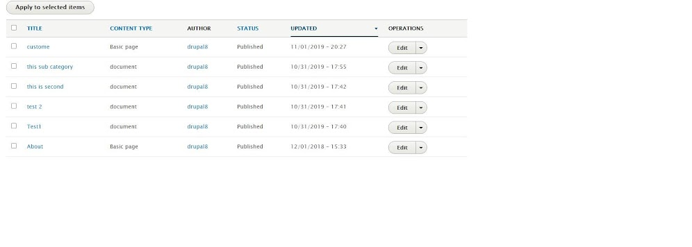
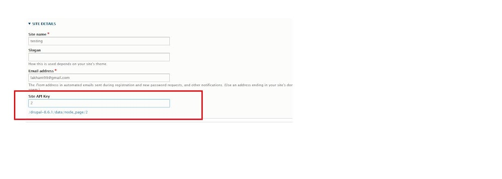
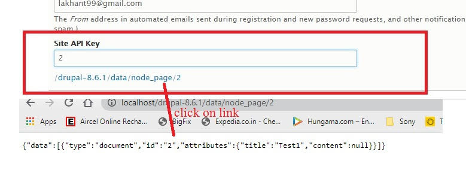

Goto:- admin/config/system/site-information
Create a custom Drupal 8 module ## Background Information When logged in as the administrator, the "Site Information" form can be found at the path /admin/config/system/site-information. ## Requirements This module needs to alter the existing Drupal "Site Information" form. Specifics: A new form text field named "Site API Key" needs to be added to the "Site Information" form with the default value of “No API Key yet”. When this form is submitted, the value that the user entered for this field should be saved as the system variable named "siteapikey". A Drupal message should inform the user that the Site API Key has been saved with that value. When this form is visited after the "Site API Key" is saved, the field should be populated with the correct value. The text of the "Save configuration" button should change to "Update Configuration". This module also provides a URL that responds with a JSON representation of a given node with the content type "page" only if the previously submitted API Key and a node id (nid) of an appropriate node are present, otherwise, it will respond with "access denied".
Goto:- admin/structure/types
click on Add content type
Content type name:- document
I have added some contents in content type document
Goto:- admin/config/system/site-information
Click:- /drupal-8.6.1/data/node_page/{id}
